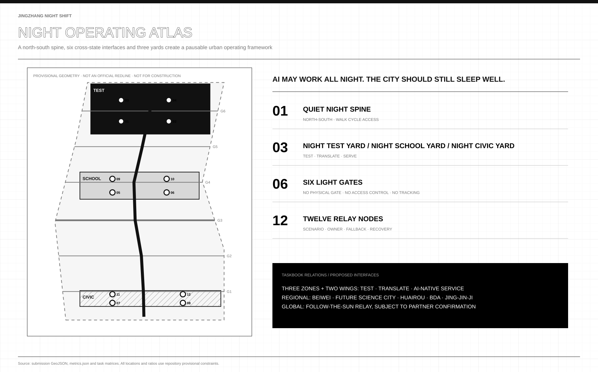
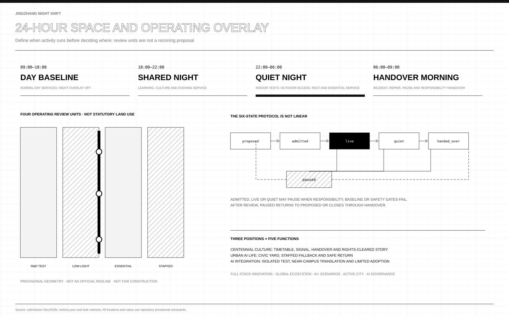
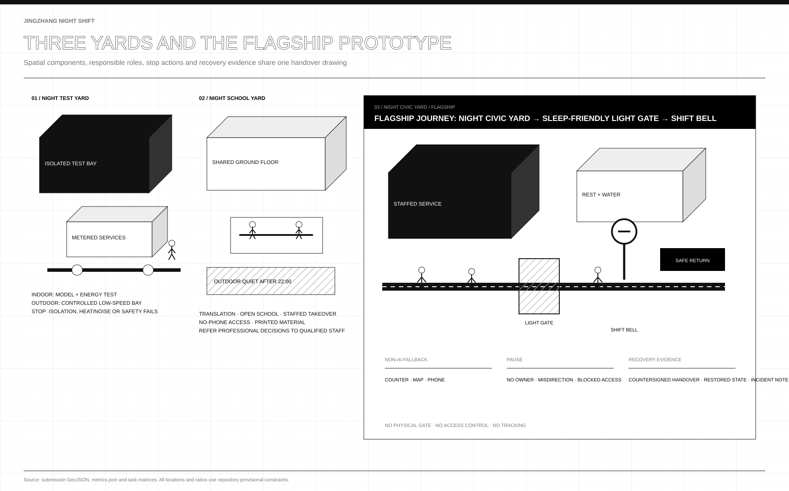
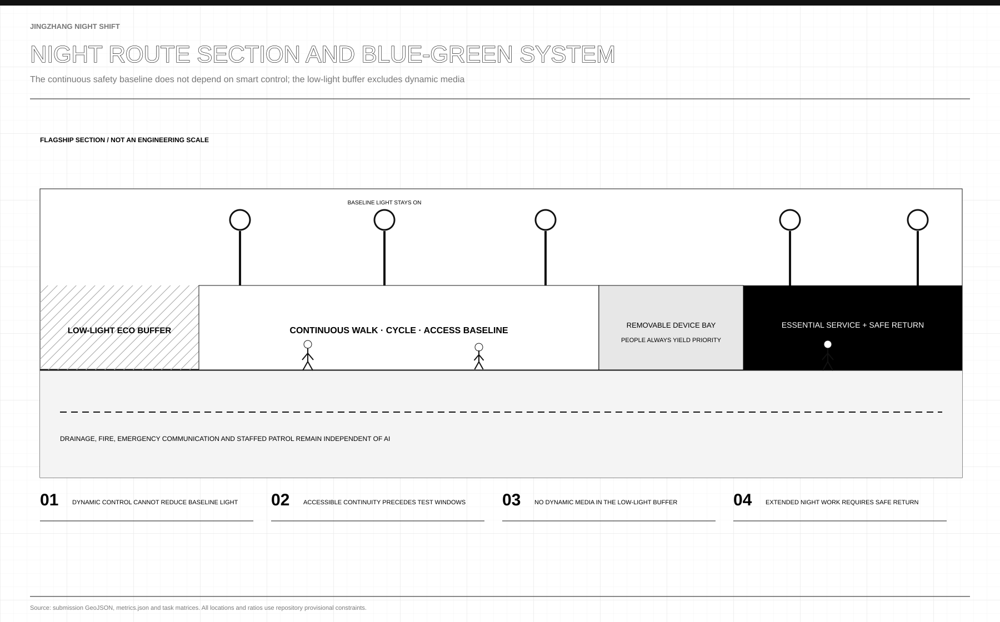
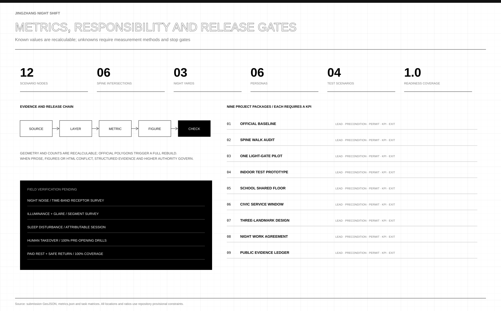

One continuous spine, not seven disconnected lines
Light gates change lighting, wayfinding and operating state. They are never barriers, access control, tracking or closure.

The night overlay switches off and can pause
All three phases cover the full site. Four complete units support operating review only and cannot change statutory land use.
admitted / live / quiet → paused
paused → proposed | handed_over

A civic night foyer, not an all-night consumption district
Staffed window, toilet/water, quiet rest, accessible route, safe return, ecological edge and Shift Bell form the flagship journey.

Safety does not simply mean brighter
Base lighting and access remain. Activity can pause, devices can leave, and ecology keeps dark hours. Light and sound values await field measurement.

Recalculate what is known; leave field effects unknown
Each package fixes lead, resource category, prerequisite, permit, KPI and exit. Takeover and paid-break coverage each require 100% before opening.
The protocol runs on checks, not goodwill
Six states, four entry gates, four daily bands, twelve nodes' responsibility fields and the phase-1 zero-construction commitment are verified by thirteen deterministic checks in a bundled script; evidence records three input hashes and reruns byte for byte.
→ 13 checks · all_passed=true · byte-identical replay
v3: an operating charter for the built park
Park phase 2 opened fully in August 2026, joining phase 1 into an about 9 km fence-free park that never closes (official and official-media reports; an operating baseline only, never an operating authorization). Phase 1 starts with zero permanent construction: baseline surveys, paper drills, staffed service in existing space. Night-test admission adds a physical give-back clause: waste heat needs a declared public destination and heat/noise spill thresholds enter the stop conditions.
Protocol interoperability (merged peers credited for mechanisms; no text or figures copied): the Timekeeping Belt's expiry timetables govern lifecycles while Night Shift governs the 22:00–06:00 hours; Light Enough budgets light while our gates switch operating states; The Warm Line's compute stations share one origin with the give-back clause; Open Platforms' built-park stance mutually confirms our zero-construction phase 1.